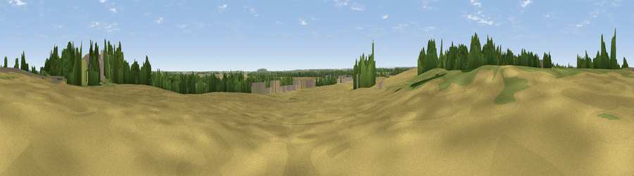

Betteras Hill
#38595 in England · top 74% of its area beats it · near HillamWhere it is
The exact computed spot (SE 49443 29048). Click the marker for map links.
The view, rendered

A 360° render of this exact spot computed from the terrain model, tree cover and land cover — summer colours, afternoon light, calibrated against photographs of famous viewpoints. Real trees, hedges and buildings will differ in detail.
The panorama
Grey silhouette: terrain skyline in each direction (720 bearings, Earth curvature and refraction included). Dashed green: skyline with trees (+15 m) and buildings (+8 m) as obstacles. Blue strip: how far the ground is visible on each bearing.
Where the view opens
Wedge length = distance to the farthest visible ground on that bearing (vegetation-aware). Rings at 10, 25 and 50 km.
What fills the view
56% cropland · 23% grassland · 14% woodland · 7% built-up
Angular shares of the visible panorama (visual magnitude), not map area. Landscape diversity 0.49 (0–1 Shannon).
Key numbers
More beautiful places nearby
The staircase of upgrades: each row has a higher view potential than everything closer. Driving times are estimates from straight-line distance, calibrated against real road routing — check an actual route before setting out.
| Place | Direction | Drive | Score |
|---|---|---|---|
| Viewpoint near New Fryston | WSW · 4 km | ~8 min | 45.6 |
| Viewpoint near Hambleton | NE · 5 km | ~11 min | 57.7 |
| Viewpoint near Micklefield | WNW · 6 km | ~13 min | 65.7 |
| Viewpoint near Woolley | SW · 24 km | ~40 min | 67.9 |
| Rawdon Trig point | WNW · 29 km | ~46 min | 69.6 |
| Rawdon Billing | WNW · 30 km | ~47 min | 73.0 |
| Viewpoint near Otley | WNW · 33 km | ~51 min | 77.5 |
| Hood Hill | N · 52 km | ~74 min | 79.6 |
53.75546, -1.25161 · source: osm peak · position refined by local search. Computed location — check access rights before visiting.